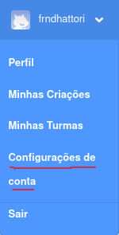
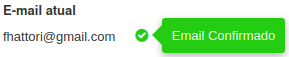
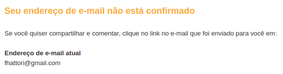
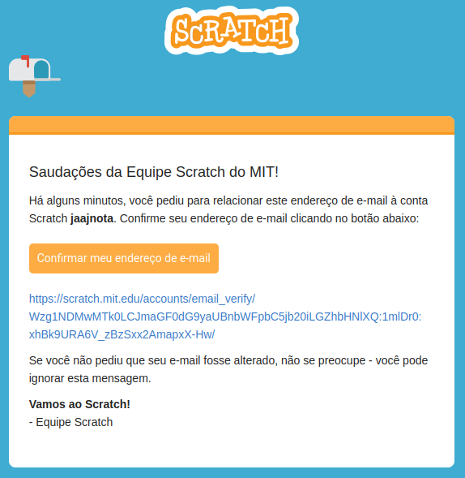
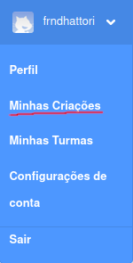
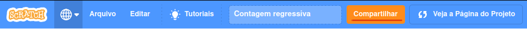
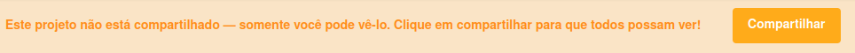
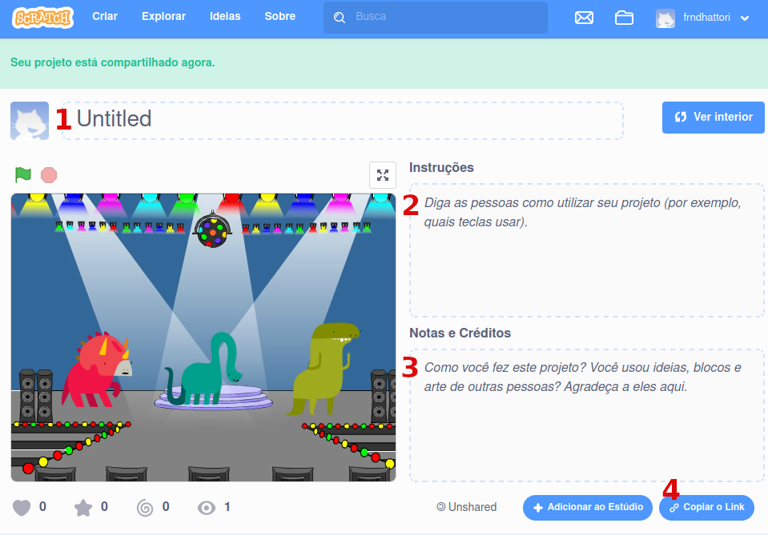
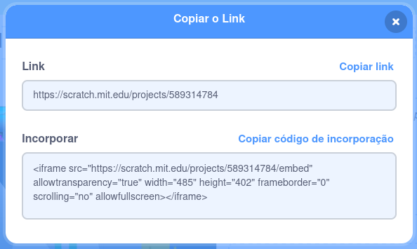

Compartilhando seu projeto do Scratch
Passo 1
Sua conta tem o e-mail confirmado?
Primeira coisa que precisamos saber é se sua conta tem o e-mail confirmado. Para isso, entramos nas "configurações de conta" clicando no seu usuário do Scratch.
Depois clique na seção "E-mail" das configurações.

Se seu e-mail já estiver confirmado, vá para o Passo 3.
Se seu e-mail não estiver confirmado, vá para o Passo 2.
Passo 2
Para confirmar o seu e-mail, primeiro verifique se o seu e-mail está correto (seu e-mail está nesse local sublinhado).
Depois de confirmar que seu e-mail está correto, digite a sua senha do Scratch no campo circulado e clique no botão de "Enviar" ou "Reenviar".
Quando você fizer isto, o Scratch te enviará um e-mail parecido com isto:
Clique no botão "Confirmar meu endereço de e-mail" ou no link que aparece logo abaixo do botão.
Isso te levará para uma página do Scratch onde ele confirmará que seu e-mail agora está confirmado
Vá para o Passo 1 novamente e verifique se agora o seu e-mail está confirmado agora.
Passo 3
Abra os seus projetos do Scratch, clicando no seu usuário e depois em "Minhas criações".
Agora vamos compartilhar o seu projeto, abra ele e clique no botão de "Compartilhar".

Depois de compartilhar seu projeto, você irá para a página do seu projeto que é parecida com essa figura abaixo.
- 1. Coloque aqui um título legal para seu projeto.
- 2. Coloque aqui as instruções gerais para seu projeto.
- 3. Coloque aqui os créditos do seu projeto, como: o nome dos criadores do projeto.
Neste espaço também é uma oportunidade de dizer se o projeto foi feito como um trabalho escolar, para qual disciplina foi feito e qual é o seu ano na escola. - 4. Link de compartilhamento.
No ponto 4, é onde encontramos o link que podemos compartilhar com outras pessoas para elas verem o nosso projeto.
Se você está seguindo este tutorial para compartilhar um projeto com seu professor, envie para ele este link que você copiou aqui.